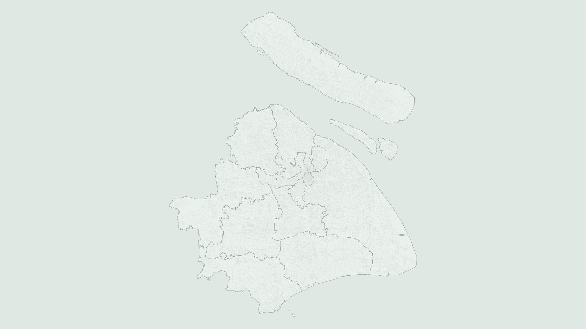
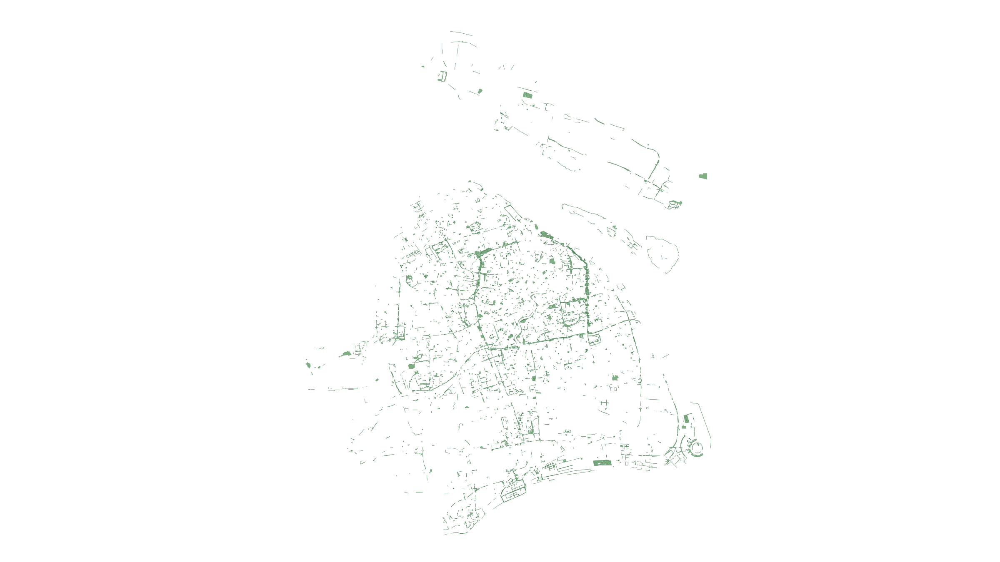
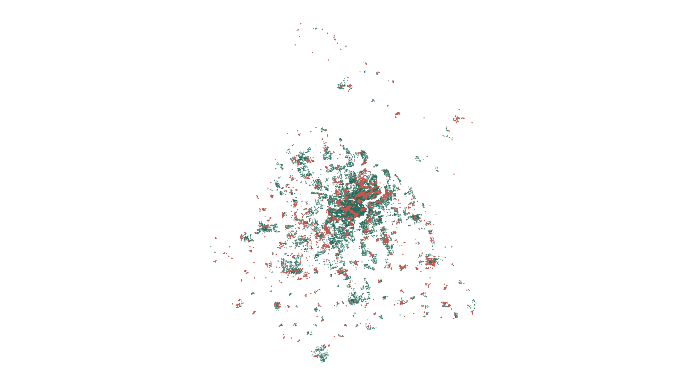
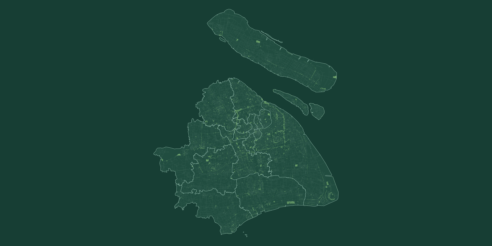

项目工作台
统一管理城市分析项目，并查看模型任务运行状态。
全部项目
按状态或关键字快速定位城市分析项目
| 项目名称 | 城市 / 区域 | 分析模型 / 类型 | 数据完整度 | 任务状态 | 更新时间 | |
|---|---|---|---|---|---|---|
| 上海市健康绿地评估PRJ-2026-008 | 上海市全域 | 15-15 健康绿地评估健康与公平 | 4 / 4 | 已完成 | 10 分钟前 | |
| 深圳居民绿地暴露公平评估PRJ-2026-006 | 深圳市全域 | 绿地暴露不平等指数健康与公平 | 4 / 5 | 运行中 68% | 今天 09:42 | |
| 杭州绿地健康效益阈值研究PRJ-2026-003 | 杭州市中心城区 | 绿地暴露健康效益阈值健康与公平 | 3 / 4 | 准备中 | 昨天 17:20 | |
| 武汉生态修复优先区识别PRJ-2025-019 | 武汉市主城区 | 城市生态修复优先区识别生态治理 | 5 / 5 | 已完成 | 10 月 21 日 | |
| 广州极端高温植被降温模拟PRJ-2025-014 | 广州市中心城区 | 极端高温植被降温模拟气候韧性 | 5 / 5 | 已完成 | 10 月 12 日 | |
| 南京社区健康绿地评估PRJ-2025-011 | 南京市中心城区 | 15-15 健康绿地评估健康与公平 | 4 / 4 | 已完成 | 9 月 28 日 | |
| 成都城市生态修复诊断PRJ-2025-009 | 成都市五城区 | 城市生态修复优先区识别生态治理 | 4 / 5 | 运行中 42% | 9 月 16 日 | |
| 北京居民绿地暴露公平评估PRJ-2025-005 | 北京市六城区 | 绿地暴露不平等指数健康与公平 | 5 / 5 | 已完成 | 8 月 30 日 |
模型中心
统一管理城市健康评价模型，创建分析任务并跟踪模型接入状态。
模型总数5覆盖 3 类业务方向
已上线1运行状态正常
待接入4正在进行产品化评估
论文支撑4课题组研究成果
15
15
15-15 健康绿地评估
判断居民能否在 15 分钟内到达一处可支持 15 分钟有效暴露的城市绿地。
- 输入
- 4 类空间数据
- 输出
- 达标率与空间缺口
绿地暴露不平等指数
综合绿地可用性、距离可达性与基尼系数，量化居民绿地暴露机会及其空间不平等。
绿地暴露健康效益阈值
量化典型城市景观中绿地暴露的生理健康效率，识别健康收益开始趋稳的暴露阈值。
城市生态修复优先区识别
融合机器学习与多维诊断框架，识别生态退化特征并划定城市生态修复优先区域。
极端高温植被降温模拟
基于 SCOPE-SEB 模型，对比不同气候带中城市植被蒸散与遮荫降温的贡献。
模型中心 / 可达性模型 / 15-15
15-15 健康绿地评估
STEP 01
创建分析并上传数据
建立一个城市分析项目，并上传完成 15-15 评估所需的四类基础空间数据。
基础空间数据
支持 ZIP Shapefile、GeoJSON 和 GeoPackage。单文件建议不超过 500 MB。
01
研究范围
必填定义分析边界，并用于裁剪其他数据。
Polygon / MultiPolygon.zip · .geojson · .gpkg
等待上传
02
住宅区 / 需求点
必填每个点表示一个住宅区或居民需求单元。
Point人口 / 户数字段可选
等待上传
03
城市绿地 AOI
必填用于计算绿地面积与有效暴露潜力。
Polygon / MultiPolygon类型字段建议提供
等待上传
04
步行道路网络
必填用于建立拓扑并计算真实步行路径。
LineString / MultiLineString道路类型字段建议提供
等待上传
所有文件仅用于本次分析任务
STEP 02
数据检查与字段映射
确认几何类型、坐标系和关键字段。平台将在计算前自动修复常见数据问题。
96数据质量评分
坐标系统可用4 个图层将统一至 EPSG:32651
几何类型匹配点、面、线数据符合模型要求
发现可修复问题9 个绿地几何将在预处理中修复
| 数据图层 | 记录数 | 唯一 ID | 名称字段 | 模型关键字段 | 状态 |
|---|---|---|---|---|---|
| 研究范围Polygon | 16 | 无需映射 | 通过 | ||
| 住宅区Point | 18,770 | 通过 | |||
| 绿地 AOIPolygon | 47,628 | 可修复 | |||
| 道路网络LineString | 58,696 | 无需映射 | 通过 |
STEP 03
设置分析参数
默认采用论文基准值。参数可按城市环境、目标人群和研究目的调整。
01
外部可达性
住宅区到合格绿地的道路网络步行条件
02
绿地有效暴露
判断绿地是否具备支持有效暴露的空间潜力
STEP 04
运行 15-15 分析
平台将依次完成数据预处理、有效绿地识别、路网构建和住宅区可达性计算。
分析区域上海市
住宅区18,770
绿地 AOI47,628
道路58,696
准备运行0%
数据清洗与坐标统一几何修复、范围筛选
绿地暴露潜力计算面积阈值与合格绿地
步行路网拓扑构建节点、边与点位吸附
15 分钟可达性计算最短路径与住宅判定
结果汇总与报告生成地图、指标与导出文件



20 km
住宅区评估结果
展示前 6 条记录，共 18,770 条。
| 住宅区 | 所属区域 | 最近合格绿地 | 路网距离 | 步行时间 | 判定 |
|---|---|---|---|---|---|
| 金龙大厦 | 黄浦区 | 人民公园 | 632 m | 9.5 min | 达标 |
| 大木小区 | 徐汇区 | 襄阳公园 | 824 m | 12.4 min | 达标 |
| 虹桥花苑 | 长宁区 | 中山公园 | 945 m | 14.2 min | 达标 |
| 嘉定社区 A | 嘉定区 | — | >1,000 m | — | 未达标 |
| 松江社区 B | 松江区 | — | >1,000 m | — | 未达标 |
| 浦东社区 C | 浦东新区 | 社区公园 | 716 m | 10.7 min | 达标 |
综合分析报告
项目概况、方法参数、核心指标、地图和结论摘要。
HTML · 可打印为 PDF住宅区评估结果
每个住宅区的达标状态、最近绿地、距离和步行时间。
CSV · 18,770 条空间结果数据包
住宅结果、合格绿地、研究边界和关键字段。
空间图层清单运行参数与摘要
参数配置、数据质量和统计指标。
JSON · 可复现记录
01ABOUT UEEE
OUR MISSION
理解城市环境如何塑造居民的生态暴露与健康。
UEEE 课题组聚焦城市生态系统、人群环境暴露与气候变化之间的联系，综合应用地理信息系统、环境遥感、空间统计、现场观测与模型分析，探索城市蓝绿空间的生态效应、健康效益与公平配置。
我们希望把城市生态研究从“识别问题”推进到“支持决策”，将可解释、可复现的研究方法转化为规划工具与基于自然的解决方案。
4核心研究方向
GIS + RS空间证据方法
Research → Action面向规划实践
02 · RESEARCH
研究方向
从城市生态过程、居民暴露到规划干预，建立跨尺度的研究链条。
城市生态学
研究城市化背景下蓝绿空间格局、生态过程与生态系统服务的变化。
城市绿地 · 生态系统服务 · 空间格局暴露生态学
关注居民接触自然环境的机会、强度、持续时间及其潜在健康效应。
绿地暴露 · 人群健康 · 环境公平城市气候与遥感
利用多源遥感和地面观测识别城市热环境及植被降温效应的时空规律。
热环境 · 环境遥感 · 气候适应基于自然的解决方案
将生态过程与空间规划结合，为健康、韧性和公平的城市转型提供方案。
NbS · 规划优化 · 健康城市PRINCIPAL INVESTIGATOR · 01
03 · APPROACH
从生态过程到健康城市决策
跨越“环境测度—人群暴露—健康效应—规划响应”的研究路径。
01城市环境测度遥感、传感器与空间数据
→02生态暴露评估可获得性、可达性与有效暴露
→03健康与公平分析效应阈值、群体差异与空间不平等
→04规划与 NbS模型工具、情景模拟与优化决策
04 · FEATURED WORK
代表工作
1515
HEALTHY CITIES · 2026
健康城市“双 15 分钟”规划模型
将绿地外部步行可达性与绿地内部有效暴露潜力整合为可操作的主客体模型，为城市绿地健康效益评估与空间规划提供统一尺度。
中国城市绿地暴露不平等研究
关注城市绿化变化与居民绿地暴露不平等之间的关系。
居民绿地暴露不平等指标
提出简洁且可操作的指标，用于量化居民获得绿地暴露机会的不平等。
城市植被降温跨气候区量化
分析极端高温下植被蒸腾与遮荫降温效应的气候依赖性。
05 · EXPERIENCE
教育与任职
- 复旦大学环境科学与工程系青年研究员、博士生导师
- 哥本哈根大学助理教授、博士生导师
- 哥本哈根大学博士后
- 哥本哈根大学地球科学与自然资源管理系博士
JOIN UEEE
与我们一起研究城市、生态与健康。
欢迎具有遥感、地理信息系统、生态学、环境科学、景观与规划等背景的本科生、硕士生、博士生及博士后联系团队。
zhaowu_yu@fudan.edu.cn ↗复旦大学环境科学与工程系上海市淞沪路 2005 号 · 江湾校区